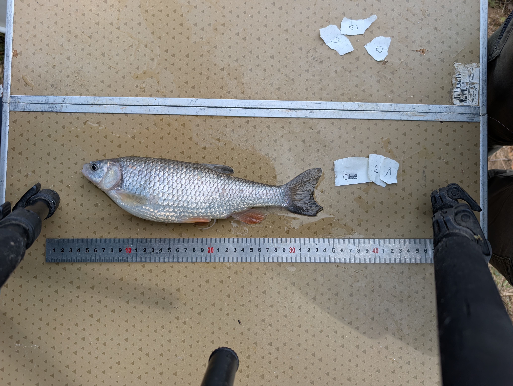

Animal biology
Major animal lineages, comparative anatomy, biology fundamentals.
During my doctoral studies, I had the opportunity to teach; I teach at least 64 hours per year. My teaching activities cover the field of biology in general but focus more specifically on ecology and zoology. Teaching is a very important part of my work, and I place special emphasis on it.

Major animal lineages, comparative anatomy, biology fundamentals.
Inventory of aquatic biodiversity, freshwater macroinvertebrates, electrofishing.
HPLC, chemical signaling mechanisms involving ecological interactions.
Soil ecology, identification, and classification of soil fauna.